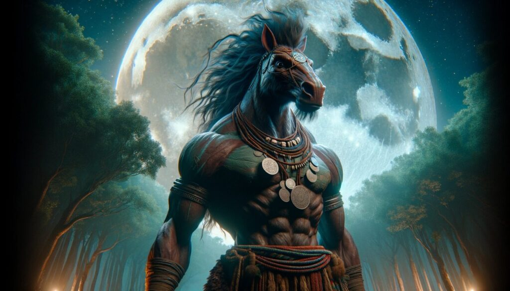
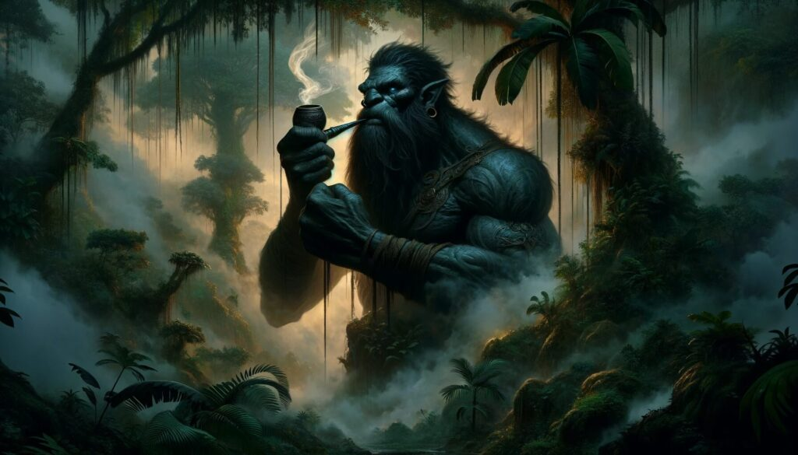
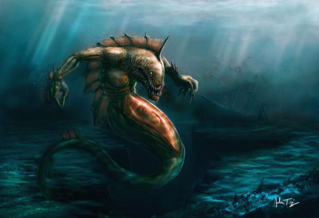

Mythical Animals in Philippine Mythology
Tikbalang

The Tikbalang is a half-horse, half-human creature known for its mischievous nature. It is said to reside in the mountains and forests, leading travelers astray and playing tricks on them. Some tales describe the Tikbalang as having the ability to turn invisible and move with incredible speed.
Aswang

The Aswang is a versatile mythical creature that can transform into various animals such as dogs, pigs, or birds. Known for its shape-shifting abilities, the Aswang is often depicted as a fearsome predator that feeds on human flesh and blood. It is a central figure in many Filipino horror stories and folklore.
Kapre

The Kapre is a giant, hairy creature that typically resides in large trees, such as the balete tree. Often depicted as a guardian of the forest, the Kapre is known to smoke a large cigar and can create illusions to confuse and scare humans. Despite its fearsome appearance, some stories describe the Kapre as a protector of nature.
Siyokoy

The Siyokoy are malevolent sea creatures that dwell in the depths of the ocean. They are often described as having green, scaly skin and webbed feet and hands. Siyokoy are known to drown sailors and fishermen, dragging them to their underwater lairs.
Sirena
The Sirena, or mermaid, is a beautiful and enchanting sea creature with the upper body of a woman and the tail of a fish. Sirenas are known for their captivating voices that lure sailors to their doom. While often seen as malevolent, some stories portray Sirenas as protectors of the sea.